21 Bienvenidos a Quarto
Este capítulo se basa en (Posit, 2026), (Wickham, 2023, Capítulo 28) y (M. Horst et al., 2022) así como en la documentación oficial de quarto donde tiene como propósito introducir la forma de comunicar resultados a través del uso de Quarto e información de la base de datos penguins disponible en (Kaye et al., 2025) así como en el paquete datasets de base R.
Exploraremos los siguientes aspectos:
- ¿Qué es Quarto?
- ¿Cuál es la anatomía de un documento en extensión
.qmd?
Para desarrollar el contenido de este capítulo es necesario que descargues el archivo en extensión .qmd señalado a continuación:
Luego, genera una carpeta con el nombre reports y dentro de esta carpeta incluye el archivo reporte_pinguinos.qmd.
Además, es necesario que descargues los archivos en extensión .png señalados a continuación:


Luego, genera una carpeta con el nombre images y dentro de esta carpeta incluye los archivos culmen_depth_es.png y penguins.png.
Adicionalmente, es necesario que descargues los archivos en extensión .bib y .csl señalados a continuación:
Luego, genera una carpeta con el nombre references y dentro de esta carpeta incluye los archivos reporte-pinguinos.bib y apa.csl.
En caso que hayas seguido estas indicaciones, procede a crear una nueva carpeta llamada 021_intro-quarto-r y dentro de ella genera el archivo 001_intro-quarto.qmd, siguiendo las pautas de la Sección 4.4 pero con un archivo en extensión .qmd.
21.1 ¿Qué es Quarto?
Quarto es un sistema de publicación científica y técnica de código abierto que proporciona un marco unificado para el análisis de datos. Su propósito es combinar en un único archivo de texto plano 3 componentes (Posit, 2026):
- Texto narrativo: Redactado mediante Markdown.
- Código ejecutable: Escrito en lenguajes de programación como R, Python, Julia u Observable.
- Resultados dinámicos: Gráficos, tablas y estimaciones generados directamente al ejecutar el código.
Esta integración se basa en la idea de literate programming (en español programación literaria). En lugar de mantener un archivo, como por ejemplo con extensión .R, con comentarios dispersos o copiar y pegar resultados manualmente entre herramientas, el código y la narrativa se integran para que el documento se lea de principio a fin. De esa manera, se logra que los resultados se actualicen automáticamente y permanezcan siempre en sincronía con los datos (Posit, 2026; Wickham, 2023, Capítulo 28).
Ten en cuenta que Quarto es una herramienta independiente de R. Es decir, no es un paquete de R como por ejemplo tidyverse, y puede ser utilizada de forma autónoma con respecto a cualquier otro lenguaje de programación, como R, Python, Julia u Observable. Por lo tanto, no encontrarás la documentación de Quarto en la Consola (en inglés Console) de R en el Panel (ver Figura 2.4) utilizando el operador de ayuda ? dentro de ella. Para consultar la documentación oficial, sintaxis y opciones de configuración, debes recurrir a la documentación señalada en Quarto.
21.1.1 Problemas que resuelve
En algunos flujos de trabajo, el análisis suele terminar copiando y pegando manualmente gráficos y valores desde el entorno de programación hacia un procesador de texto o diapositivas (Posit, 2026). Este proceso manual es propenso a errores y resulta ineficiente, ya que si los datos cambian, es necesario repetir todo el procedimiento (Wickham, 2023, Capítulo 28).
Quarto soluciona esta dificultad al mantener el texto, el código y los resultados integrados en un único archivo, aportando 3 beneficios (Posit, 2026):
- Reproducibilidad: los resultados provienen directamente de ejecutar el código. En ese sentido, otro individuo puede reconstruir el documento y obtener los mismos resultados.
- Actualización permanente: si se incorporan nuevos datos o se ajusta el código, solo se requiere volver a compilar el documento para que cada tabla, gráfico y valor se actualice.
- Archivos de texto plano: los documentos
.qmdson texto plano, lo que facilita editarlos y realizar seguimiento a los cambios mediante sistemas de control de versiones como Git (ver Nota 3.3).
21.1.2 Renderizar un documento
El proceso de transformar un archivo que combina texto y código en un producto final se conoce como renderizar (en inglés render) (Posit, 2026). Al renderizar, el archivo original en extensión .qmd permanece intacto, generando un nuevo archivo de salida con los resultados incorporados. En la Figura 21.1 se describe la secuencia de pasos que Quarto realiza durante este proceso:

.qmd hasta los formatos finales (team, 2026)
.qmd: es el archivo fuente en texto plano que contiene la combinación de texto narrativo en Markdown y los bloques de código.knitr: es el “motor” encargado de ejecutar secuencialmente cada una de las celdas de código presentes en el documento..md: a partir de la ejecución, se genera un archivo intermedio en formato Markdown que integra el texto original junto con las salidas generadas por el código, como por ejemplo tablas, figuras y valores numéricos.pandoc: es el conversor de documentos que toma el archivo.mdintermedio y lo traduce al formato final especificado, como por ejemplo páginas web HTML, documentos PDF o archivos de Microsoft Word y OpenDocument.
Para renderizar un documento de Quarto de acuerdo a lo descrito en la Figura 21.1 selecciona el ícono de archivos  en la Barra de actividades y abre el archivo
en la Barra de actividades y abre el archivo reporte_pinguinos.qmd utilizando la Barra lateral primaria (ver Figura 2.4) en la carpeta reports. En el Editor puedes renderizar el documento utilizando la opción Preview, tal como se señala en la Figura 21.2.

También puedes situar el cursor (|) sobre alguna parte del documento y presionar la combinación de teclas o utilizar el Terminal en el Panel ejecutando el siguiente comando, tal como se señala a continuación:
quarto render reports/reporte_pinguinos.qmdDe esa manera, en la Barra lateral primaria encontrarás que se crea un archivo adicional dentro de la carpeta reports con el nombre reporte_pinguinos.html. En ese sentido, se crea un archivo con extensión .html manteniendo intacto el archivo de texto plano reporte_pinguinos.qmd, con lo cual se completa el proceso señalado en la Figura 21.1.
21.1.3 Formatos de salida para documentos
Quarto incluye la posibilidad de renderizar documentos a múltiples formatos. Por el momento, en relación con reporte_pinguinos.qmd respecto a la Sección 21.1.2, se ha utilizado únicamente el formato html. Sin embargo, para la elaboración de documentos Quarto ofrece una amplia variedad de opciones de salida como html, pdf, docx, typst, odt y epub. En la Tabla 21.1 se presentan estos formatos junto con su descripción:
| Formato | Descripción |
|---|---|
html |
Páginas y documentos web basados en el estándar HTML5. Es el formato predeterminado en Quarto para publicar contenidos interactivos en línea. |
pdf |
Documentos basados en PDF y generados a través de LaTeX con control preciso de tipografía, márgenes, encabezados y citas bibliográficas. |
docx |
Documentos de procesamiento de texto para Microsoft Word basados en el estándar abierto Office Open XML (.docx). |
typst |
Sistema de composición tipográfica moderno y de código abierto desarrollado mediante Typst. Diseñado como una alternativa a LaTeX que genera archivos PDF con tiempos de renderizado más rápidos sin requerir una instalación previa de LaTeX. |
odt |
Documentos de texto basados en el estándar abierto OpenDocument (.odt) compatibles con procesadores de texto como LibreOffice Writer. |
epub |
Libros electrónicos en formato estándar EPUB diseñados para la lectura en dispositivos móviles, tabletas y lectores digitales. |
Para renderizar documentos en formato pdf es necesario contar con una distribución reciente de LaTeX. El equipo principal de Quarto sugiere utilizar TinyTeX, una distribución ligera basada en TeX Live. En caso de que no tengas una distribución de LaTeX instalada en tu sistema, puedes instalar TinyTeX utilizando el Terminal del Panel (ver Figura 2.4) en Positron mediante la ejecución del siguiente comando:
quarto install tinytexEn la Sección 21.2.1 explorarás la posibilidad de renderizar un documento en diversos formatos donde en particular para el formato pdf se debe tener en cuenta la Precaución 21.1. Por ahora, puedes descargar a continuación los reportes asociados con reporte_pinguinos.qmd en formatos html, docx, odt y pdf para examinar el resultado final respecto a otras opciones de acuerdo a lo señalado en Figura 21.1:
21.2 Anatomía de un documento de Quarto
Un archivo con extensión .qmd está compuesto de 3 elementos. A continuación se señala una versión reducida de reporte_pinguinos.qmd para ilustrar cada uno de estos aspectos:
---
title: "Paradoja de Simpson: dimensiones del pico en pingüinos"
author:
- Allison M. Horst
- Alison Presmanes Hill
- Kristen B. Gorman
date: 2026-11-17
format:
html:
code-fold: true
embed-resources: true
---
```{r}
#| label: cargar-paquetes
#| message: false
library(tidyverse)
```
# Introducción
La **paradoja de Simpson** es un fenómeno estadístico en el cual una ... Al principio existen diferentes símbolos que puede que no comprendas, pero estos se pueden separar en 3 elementos, tal como se muestra en la Tabla 21.2:
| Elemento | Símbolo | Función |
|---|---|---|
| Encabezado YAML | El primer bloque entre las 2 líneas --- |
Fija las opciones que se aplican de manera global al documento como el título, los autores, la fecha, el formato y las opciones específicas de ese formato tales como code-fold: true y embed-resources: true |
| Texto Markdown | Texto como “es un fenómeno estadístico en el cual una …” con símbolos como # y ** |
Estructura y da formato al texto narrativo para comunicar y contextualizar los resultados |
| Celdas de código | Bloque que empieza con ```{r} y termina con ``` |
Genera la renderización de los resultados como producto de la ejecución del código de acuerdo con las opciones fijadas, como por ejemplo #| message: false y la aplicación de un identificador como #| label: cargar-paquetes |
Si deseas puedes copiar el código mencionado anteriormente en 001_intro-quarto.qmd teniendo en cuenta lo mencionado en la Nota 21.1 para experimentar mediante la modificación del título, los autores o la fecha. En las siguientes secciones se explorará con más detalle otros aspectos de cada uno de los 3 elementos mencionados en la Tabla 21.2.
21.2.1 Encabezado YAML
YAML es un formato estándar de serialización de datos diseñado para ser legible para personas. En los documentos de Quarto, YAML se emplea para configurar los metadatos y las opciones globales del archivo mediante un bloque denominado encabezado (en inglés front matter), el cual se ubica al comienzo del documento.
En reporte_pinguinos.qmd (ver Nota 21.1) el encabezado YAML se define, tal como se señala a continuación:
---
title: "Paradoja de Simpson: dimensiones del pico en pingüinos"
author:
- Allison M. Horst
- Alison Presmanes Hill
- Kristen B. Gorman
date: 2026-11-17
toc: true
number-sections: true
format:
html:
code-fold: true
embed-resources: true
lang: es
engine: knitr
bibliography: ../references/reporte-pinguinos.bib
csl: ../references/apa.csl
---Este bloque se rige por las siguientes reglas de sintaxis en YAML:
- Delimitadores (
---): El encabezado siempre inicia y finaliza con 3 guiones consecutivos (---) en líneas separadas. Todo contenido situado entre estos delimitadores es interpretado como configuración y metadatos por Quarto, separándolo del cuerpo del documento. - Pares clave-valor (
clave: valor): La estructura básica consiste en asociar un nombre o clave con un valor determinado, separados por 2 puntos y un espacio obligatorio (:). - Secuencias de escalares: Cuando una clave contiene múltiples elementos ordenados, como los autores en
author:, cada elemento se especifica en una nueva línea antecedido por un guion y un espacio (-). - Estructura jerárquica e indentación: YAML define la anidación y subordinación mediante sangrías de 2 espacios por nivel. Es importante señalar que no se permite el uso de tabuladores, ya que pueden generar errores de sintaxis en el procesamiento del archivo.
- Tipos de valores:
- Cadenas explícitas (en inglés explicit strings): Texto delimitado por comillas dobles o simples, necesario cuando el texto incluye caracteres especiales o dos puntos (
:), como entitle: "Paradoja de Simpson: dimensiones del pico en pingüinos". - Cadenas implícitas (en inglés implicit strings): Texto sin comillas reconocido automáticamente como cadena cuando no presenta ambigüedades, como
esenlang:oknitrenengine:. - Booleanos (en inglés booleans): Valores lógicos representados por
trueofalsecomo entoc: trueonumber-sections: true. - Marcas de tiempo (en inglés timestamps): Fechas expresadas en formato estándar ISO 8601 (
AAAA-MM-DD) como2026-11-17endate:.
- Cadenas explícitas (en inglés explicit strings): Texto delimitado por comillas dobles o simples, necesario cuando el texto incluye caracteres especiales o dos puntos (
21.2.1.1 Opciones globales y específicas de formato
Es fundamental distinguir el alcance de las opciones dentro del encabezado YAML:
Opciones fuera de
format:Se aplican de manera global a cualquier formato de salida en el que se compile el documento.Opciones dentro de
format:Se aplican de manera exclusiva al formato específico en el cual se encuentran anidadas. Por ejemplo, dentro de:format: html: code-fold: true embed-resources: true
Las opciones code-fold: true que pliega las celdas de código de forma interactiva y embed-resources: true que “empaqueta” todas las imágenes, hojas de estilo y dependencias en un único archivo HTML independiente, se ejecutan únicamente cuando la salida es un documento HTML.
21.2.1.2 Descripción de los campos del encabezado
A continuación se detalla la función de cada uno de los campos utilizados en reporte_pinguinos.qmd:
title: Título principal del documento que se mostrará en el encabezado del reporte.author: Secuencia con los nombres de las autoras o autores del documento.date: Fecha de publicación del reporte.toc: Acrónimo de Table of Contents que, al fijarse entrue, genera automáticamente una tabla de contenidos interactiva.number-sections: Al fijarse entruenumera secuencialmente cada una de las secciones y encabezados del reporte.lang: Establece el idioma del documento, por ejemploespara español, traduciendo automáticamente los textos fijos generados por Quarto como “Figura”, “Tabla” o “Tabla de Contenidos”.engine: Especifica el “motor” de cómputo para procesar el código. En el caso del reporteknitrpara ejecutar código de R (ver Figura 21.1).bibliography: Ruta relativa hacia el archivo de referencias bibliográficas en formato BibTeX (.bib).csl: Ruta relativa hacia el archivo de estilo de citación en formato Citation Style Language (.csl). En el caso del reporte se aplican normas APA para las referencias.
En los campos bibliography: ../references/reporte-pinguinos.bib y csl: ../references/apa.csl, el uso del prefijo ../ es indispensable debido a la estructura de directorios del proyecto. El archivo reporte_pinguinos.qmd se encuentra alojado dentro de la carpeta reports/, mientras que los archivos .bib y .csl están guardados en la carpeta references/.
El prefijo ../ le indica a Quarto que debe retroceder un nivel en la jerarquía de carpetas, es decir salir de reports/, para luego ingresar a la carpeta references/. Si omitieras ../, Quarto intentaría buscar la ruta reports/references/, la cual no existe, ocasionando un error durante el renderizado.
21.2.1.3 Renderizado en múltiples formatos
Una de las ventajas de Quarto es la posibilidad de definir múltiples formatos de salida dentro de la sección format:. Por ejemplo, puedes modificar el encabezado de reporte_pinguinos.qmd incorporando las opciones pdf, docx y odt con la palabra clave default para utilizar sus configuraciones predeterminadas:
format:
html:
code-fold: true
embed-resources: true
pdf: default
docx: default
odt: defaultTen en cuenta, de todas maneras, que para compilar a formato pdf es indispensable contar con una instalación funcional de LaTeX, tal como se indicó en la Precaución 21.1.
Para renderizar el documento a estos formatos de manera similar a lo explicado en la Sección 21.1.2, dispones de 2 mecanismos:
Desde el Editor de Positron: Puedes hacer clic en el menú desplegable junto a la opción Preview en la barra de herramientas superior del Editor (ver Figura 21.2) y seleccionar el formato específico que deseas compilar (
html,pdf,docxoodt).Desde el Terminal: Puedes abrir el Terminal en el Panel (ver Figura 2.4) y ejecutar el comando
quarto renderindicando el formato deseado mediante el argumento--tode 2 posibles formas, tal como se señala a continuación:# Renderizar a todos los formatos definidos simultáneamente quarto render reports/reporte_pinguinos.qmd --to all # O renderizar a un formato específico quarto render reports/reporte_pinguinos.qmd --to pdf quarto render reports/reporte_pinguinos.qmd --to docx quarto render reports/reporte_pinguinos.qmd --to odt quarto render reports/reporte_pinguinos.qmd --to html
Al ejecutar estos comandos, Quarto procesará reporte_pinguinos.qmd y generará los archivos correspondientes reporte_pinguinos.pdf, reporte_pinguinos.docx, reporte_pinguinos.odt o reporte_pinguinos.html dentro de la carpeta reports/.
Al definir formatos de salida en el encabezado YAML, puedes utilizar la palabra clave default, como por ejemplo pdf: default, docx: default u odt: default, para renderizar con las opciones predeterminadas de Quarto.
Sin embargo, al igual que se personalizó html incorporando opciones como code-fold: true y embed-resources: true, cada formato admite diversas opciones para controlar su diseño, fuentes, márgenes o estructura.
En la siguiente tabla puedes consultar los enlaces a la documentación de referencia oficial de Quarto para cada uno de estos formatos:
| Formato | Documentación de referencia |
|---|---|
html |
Referencia HTML |
pdf |
Referencia PDF |
docx |
Referencia Word (DOCX) |
odt |
Referencia OpenDocument (ODT) |
21.2.2 Texto Markdown
El texto narrativo en Quarto se redacta utilizando una variante extendida de Markdown conocida como Pandoc Markdown. Markdown permite escribir texto plano legible y estructurado sin necesidad de recurrir a etiquetas complejas, facilitando su posterior conversión a formatos como HTML, PDF, Word u OpenDocument.
A continuación, se examinan las principales características y usos de Markdown presentes en el archivo reporte_pinguinos.qmd (ver Nota 21.1).
21.2.2.1 Encabezados
Los encabezados permiten estructurar jerárquicamente el contenido del documento. En Markdown, los encabezados se crean anteponiendo uno o más símbolos numerales (#) seguidos de un espacio obligatorio al inicio de la línea. El número de símbolos # determina el nivel del encabezado, desde # para el nivel 1 (<h1>) hasta ###### para el nivel 6 (<h6>).
En reporte_pinguinos.qmd la estructura general del documento se define de la siguiente manera:
# Introducción
# Datos
# Paradoja de Simpson
## Asociación global
## Asociación por especie
# Conclusión
# Referencias
Como se puede observar:
- Los títulos principales (
# Introducción,# Datos,# Paradoja de Simpson,# Conclusióny# Referencias) corresponden a encabezados de nivel 1. - Las secciones internas dentro de la paradoja (
## Asociación globaly## Asociación por especie) corresponden a encabezados de nivel 2, subordinados a# Paradoja de Simpson. - Quarto utiliza estos encabezados para construir de forma automática la tabla de contenidos interactiva (
toc: true) y para numerar secuencialmente las secciones (number-sections: true), tal como se configuró en el encabezado YAML (ver Sección 21.2.1).
21.2.2.2 Formato de texto
Markdown ofrece una sintaxis sencilla para aplicar estilos tipográficos básicos al texto:
- Negrita (
**texto**): Se delimita el texto entre dos asteriscos consecutivos (**) sin espacios interiores. Enreporte_pinguinos.qmdse utiliza para destacar conceptos clave como**paradoja de Simpson**,**pendiente negativa**,**invierte**y**positiva**,**variable de confusión**y**riesgo de agregación**. - Cursiva (
*texto*): Se delimita el texto entre un solo asterisco (*) a cada lado. En el reporte se emplea para nombres científicos en latín como*Pygoscelis*,*Adélie*,*Chinstrap*y*Gentoo*, nombres geográficos como*Biscoe*,*Dream*y*Torgersen*, categorías de sexo como*female*y*male*o vocablos en inglés como*confounder*. - Código en línea / texto literal (
`código`): Se delimita mediante acentos graves simples (`). Se utiliza para citar textualmente nombres de paquetes, conjuntos de datos o variables en el texto, evitando que se confundan con la narrativa. En el reporte se emplea enpenguins,datasets,bill_lenybill_dep,flipper_len,body_mass,sex,yeary para identificar valores ausentesNA.
21.2.2.3 Imágenes
Para incorporar imágenes estáticas en un documento de Quarto se emplea la siguiente sintaxis general:
{atributos}En reporte_pinguinos.qmd se incluye, por ejemplo, la ilustración de las especies de pingüinos:
![Especies ... (*Chinstrap*), ... [@m_horst_palmer_2022].](../images/penguins.png){#fig-pinguinos fig-alt="Ilustración ..." fig-align="center" width="70%"}En esta declaración se distinguen 3 componentes:
- Leyenda del gráfico (
[...]): El texto dentro de los corchetes funciona como la descripción visible bajo la figura. Este texto admite formato Markdown completo, como cursivas (*Chinstrap*) y citas bibliográficas ([@m_horst_palmer_2022]). - Ruta del archivo (
(...)): La ruta relativa hacia el archivo de la imagen. Al estarreporte_pinguinos.qmddentro dereports/, se utiliza../images/penguins.pngpara retroceder un nivel e ingresar a la carpetaimages/(ver Nota 21.3). - Atributos (
{...}):{#fig-pinguinos}: Asigna una etiqueta o identificador único con el prefijofig-que permite crear referencias cruzadas automáticas en el texto mediante@fig-pinguinos.fig-alt="...": Proporciona un texto alternativo accesible para lectores de pantalla.fig-align="center": Centra horizontalmente la figura en el documento.width="70%": Controla el ancho relativo de la imagen en la salida final.
De forma análoga, en el reporte se incorpora la imagen culmen_depth_es.png con la etiqueta {#fig-culmen} y un ancho del 60%.
21.2.2.4 Listas
Markdown permite crear listas ordenadas y no ordenadas. Para las listas ordenadas se antepone un número seguido de un punto y un espacio obligatorio, como por ejemplo 1..
En reporte_pinguinos.qmd se presenta una lista ordenada con las pendientes estimadas para cada especie de pingüino:
1. *Adélie*: ...
2. *Chinstrap*: ...
3. *Gentoo*: ...Quarto numera automáticamente los elementos de la lista en la salida final, incluso si en el archivo fuente se repitiera el número 1. en cada línea. Las listas no ordenadas, por su parte, se generan utilizando guiones (-) o asteriscos (*).
21.2.2.5 Notas al pie
Las notas al pie permiten agregar aclaraciones metodológicas o explicaciones complementarias sin interrumpir el flujo de la lectura del documento. Se estructuran en 2 partes:
- Llamada a la nota: Se inserta en el lugar exacto del texto donde se desea la referencia mediante la sintaxis
[^identificador]. - Definición de la nota: Se escribe en un párrafo independiente mediante
[^identificador]: Texto explicativo....
En reporte_pinguinos.qmd se utiliza este mecanismo, por ejemplo, para justificar la exclusión de observaciones con valores ausentes, tal como se señala a continuación:
Sin embargo, ... `species` (ver @fig-asociacion-especie)[^asociacion-especie], ...
[^asociacion-especie]: Al igual ... en la `@tbl-variables`.21.2.2.6 Tablas
En Markdown de Quarto, las tablas en texto plano se construyen mediante la sintaxis de tablas de barras (en inglés pipe tables), empleando barras verticales (|) para delimitar columnas y guiones (-) para separar la fila de encabezados del cuerpo de datos.
En reporte_pinguinos.qmd, por ejemplo, se documentan las variables del conjunto de datos penguins, tal como se señala a continuación:
| Variable | Descripción | Valores ausentes (`NA`) |
| :--- | :--- | :---: |
| `species` | Especie de pingüino (*Adélie*, *Chinstrap*, *Gentoo*) | 0 |
| `island` | Isla del archipiélago Palmer (*Biscoe*, *Dream*, *Torgersen*) | 0 |
| `bill_len` | Longitud del culmen o pico (milímetros - mm) | 2 |
| `bill_dep` | Altura del culmen o pico (milímetros - mm) | 2 |
| `flipper_len` | Longitud de la aleta (milímetros - mm) | 2 |
| `body_mass` | Masa corporal (gramos - g) | 2 |
| `sex` | Sexo del individuo (*female*, *male*) | 11 |
| `year` | Año de estudio (2007, 2008, 2009) | 0 |
: Variables del conjunto de datos `penguins` {#tbl-variables}En esta estructura se destacan los siguientes aspectos:
- Alineación de columnas: Se define en la línea delimitadora mediante la posición de los 2 puntos (
:)::---: Alineación a la izquierda, empleada en las columnasVariableyDescripción.:---:: Alineación centrada, empleada enValores ausentes (NA).---:: Alineación a la derecha.
- Leyenda e identificador: La línea posterior que inicia con 2 puntos,
: Variables del conjunto de datospenguins{#tbl-variables}, asigna el título de la tabla y una etiqueta con el prefijotbl-que permite referenciar la tabla en el texto mediante@tbl-variables.
21.2.2.7 Contenido sin formato (en inglés raw content)
Cuando se requiere aplicar configuraciones o estilos específicos de un formato que no forman parte del estándar de Markdown, Quarto permite incluir bloques de contenido sin formato (en inglés raw attribute blocks) utilizando la sintaxis ```{=formato}.
En reporte_pinguinos.qmd se incluye el siguiente bloque:
```{=html}
<style>
p {
text-align: justify;
}
</style>
```Este bloque le indica a Pandoc que el fragmento <style> p { text-align: justify; } </style> debe transmitirse intacto y sin interpretar directamente al archivo HTML final para justificar el texto de los párrafos. Si el documento se compila hacia otro formato como PDF, Word u OpenDocument, Pandoc ignora este bloque por completo. De esa manera, se garantiza que el documento no genere errores de incompatibilidad en otros entornos.
21.2.2.8 Ecuaciones matemáticas
Quarto ofrece soporte nativo para la composición tipográfica de ecuaciones matemáticas utilizando la sintaxis estándar de LaTeX:
- Ecuaciones en línea (en inglés inline math): Se encierran entre signos de dólar simples (
$ ... $). Es indispensable que no existan espacios en blanco entre el signo de dólar y el contenido matemático. Por ejemplo,$x$y no$ x $. - Ecuaciones en bloque (en inglés display math): Se encierran entre dos signos de dólar (
$$ ... $$) en párrafos separados para mostrar ecuaciones destacadas y centradas.
En reporte_pinguinos.qmd se utiliza la notación en línea para presentar la pendiente estimada y su significancia estadística:
... $\hat{\beta}_1 = -0.0850$, ... De igual forma, se emplea la misma notación dentro de la lista ordenada para cada especie:
\hat{\beta}_1: Representa el parámetro beta con un sombrero (^) y un subíndice (_1).\text{valor}: Permite incluir texto en tipografía normal dentro del modo matemático.\times 10^{-5}: Genera el símbolo de multiplicación (\(\times\)) con el exponente superíndice correspondiente (^{-5}).
21.2.2.9 Bloques de llamada
Los bloques de llamada (en inglés callout blocks) son recuadros visuales destacados que sirven para llamar la atención del lector sobre notas, avisos, advertencias o consejos metodológicos. Se definen mediante la sintaxis de divisiones de Pandoc con 3 signos de dos puntos seguidos (::: {.callout-<tipo>}) y se cierran con :::.
En reporte_pinguinos.qmd, por ejemplo, se incluye una nota introductoria:
::: {.callout-note}
El presente reporte tiene como objetivo ilustrar ...
:::Quarto admite 5 tipos estándar de bloques de llamada:
.callout-note: Para notas y aclaraciones generales, como la empleada en el reporte..callout-tip: Para consejos útiles o buenas prácticas..callout-warning: Para advertencias sobre posibles problemas o consideraciones importantes..callout-caution: Para precauciones ante acciones que puedan generar errores..callout-important: Para información crucial o requisitos indispensables.
Opcionalmente, los callouts pueden incluir títulos personalizados mediante un encabezado interno, como por ejemplo ## Propósito del reporte, así como propiedades collapse="true" para que aparezcan plegados por defecto o appearance="minimal" para simplificar su diseño visual.
21.2.2.10 Citas y referencias bibliográficas
La gestión de citas y bibliografía en Quarto se basa en el motor de citas de Pandoc, documentado detalladamente en Citations in Quarto. Para citar una fuente dentro del texto se utiliza el carácter arroba (@) seguido de la clave de citación (en inglés citation key) definida en un archivo de bibliografía en formato BibTeX (.bib).
En reporte_pinguinos.qmd se encuentran diversos ejemplos de citas bibliográficas:
Citas entre corchetes: Se encierran entre corchetes
[@clave]. Por ejemplo,[@m_horst_palmer_2022]genera la cita entre paréntesis (Horst et al., 2022).Múltiples citas simultáneas: Se separan mediante punto y coma dentro de los mismos corchetes. Por ejemplo:
... [@simpson_interpretation_1951; @sprenger_simpsons_2026]Lo anterior compila como (Simpson, 1951; Sprenger & Stegenga, 2026).
Citas en el texto (narrativas): Si se omite el corchete exterior y se escribe directamente
@clave, el nombre de los autores queda integrado en la narrativa y solo el año se muestra entre paréntesis.Localizadores o números de página: Se pueden añadir páginas, capítulos o secciones tras una coma, como en
[@wickham_r_2023, Cap. 28].
21.2.2.10.1 Conexión con el encabezado YAML
Para que las citas funcionen de manera integrada en el documento, es indispensable vincular las claves bibliográficas y las normas tipográficas en el encabezado YAML (ver Sección 21.2.1). En reporte_pinguinos.qmd esta configuración se realiza mediante los campos:
bibliography: ../references/reporte-pinguinos.bib
csl: ../references/apa.cslDonde bibliography le indica a Quarto la ruta relativa (ver Nota 21.1) hacia el archivo de referencias BibTeX que contiene las claves citadas, como por ejemplo @simpson_interpretation_1951 o @m_horst_palmer_2022, y csl define el archivo de estilo en formato Citation Style Language, aplicando en este caso las normas internacionales de la American Psychological Association (APA).
21.2.3 Celdas de código
Las celdas de código (en inglés code cells) constituyen el tercer componente de un documento de Quarto (ver Tabla 21.2). Estas permiten intercalar código ejecutable con la narrativa del documento, garantizando la reproducibilidad del análisis.
21.2.3.1 Estructura y motor de cómputo
Una celda de código se delimita abriendo con 3 acentos graves y el identificador del lenguaje entre llaves (```{r}) y cerrando con 3 acentos graves (```).
Tal como se configuró en el encabezado YAML (ver Sección 21.2.1) mediante el campo global:
engine: knitrQuarto delega la ejecución del código en R al “motor” knitr. Dado que instalaste previamente el metapaquete tidyverse (ver Sección 4.2), este contiene al paquete knitr, por lo que cuentas con el “motor” necesario para evaluar las celdas de código.
En el entorno de desarrollo Positron, puedes ejecutar las celdas de forma interactiva o renderizar el documento. En este último caso, Quarto ejecuta secuencialmente todas las celdas en una sesión limpia y controlada de acuerdo con el flujo descrito en la Figura 21.1 (ver Computations with R).
21.2.3.2 Sintaxis de opciones de celda (#|)
Quarto estandariza la configuración de celdas mediante la sintaxis hashpipe (#|). Las opciones se especifican en las primeras líneas de la celda utilizando pares clave: valor propios de YAML (ver Knitr Options Reference):
```{r}
#| label: cargar-paquetes
#| message: false
library(tidyverse)
```Esta separación entre los metadatos de la celda y las instrucciones ejecutables de R mejora sustancialmente la legibilidad y el mantenimiento del código.
21.2.3.3 Opciones comunes en reporte_pinguinos.qmd
En reporte_pinguinos.qmd se ilustran las opciones de celda más habituales:
Identificadores y referencias cruzadas (
#| label):#| label: cargar-paquetes: Asigna una etiqueta única para identificar la celda en el esquema de navegación del editor en Positron y en los registros de compilación.#| label: fig-asociacion-globaly#| label: fig-asociacion-especie: Al anteponer el prefijo reservadofig-, Quarto reconoce que el resultado gráfico de la celda debe registrarse como una figura numerada automáticamente, habilitando su referenciación cruzada en el texto (@fig-asociacion-globaly@fig-asociacion-especie).
Leyendas de figuras (
#| fig-cap): Define el texto descriptivo al pie del gráfico. Por ejemplo:#| fig-cap: "Asociación global ..."Control de mensajes (
#| message: false): Suprime los mensajes informativos emitidos por R en la consola, como por ejemplo al ejecutarlibrary(tidyverse), evitando que aparezcan los mensajes en el documento final (ver Sección 5.3.1).Control de advertencias (
#| warning: false): Evita la impresión de advertencias (ver Sección 5.3.2). En las celdas de graficación conggplot2, oculta el aviso estándar que advierte la remoción de observaciones con valores ausentes (NA) enbill_lenybill_dep.
21.2.3.4 Conexión con la opción code-fold del encabezado YAML
En la Sección 21.2.1 se estableció para el formato HTML la opción:
format:
html:
code-fold: trueEsta directiva global instruye a Quarto a generar el código R plegado dentro de un elemento interactivo en HTML mostrando un botón desplegable con la etiqueta Código, de modo que los gráficos y resultados numéricos destaquen sin saturar visualmente el reporte.
No obstante, las opciones de celda tienen precedencia local sobre las opciones globales del YAML. En cualquier celda individual es posible personalizar este comportamiento según el propósito comunicativo (ver Knitr Options Reference y Computations with R):
#| echo: false: Oculta completamente el código fuente, por lo que no muestra el botón desplegable, dejando visible únicamente la salida, que puede ser un gráfico, tabla o valor.#| code-fold: false: Fuerza la visualización permanente del código sin posibilidad de plegarlo.#| code-fold: show: Muestra el código desplegado al abrir el documento, pero conservando el botón interactivo para quien desee contraerlo.